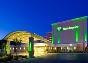

This Workshop follows on from the previous two workshops at NIST in February 2014 and Diamond in October of 2014 and the interim closed project meeting held at SAS-2015 in Berlin in September 2015. The Workshop will consist of three parts. On Monday will be the presentation sessions of broad interest to the scientific community. Attendees are encouraged to bring posters explaining their use of these kinds of modeling techniques or illustrating their need for such. Tuesday morning will be devoted to a meeting between the CCP-SAS project and individuals or institutions with activities in related software development areas, interests in participating in the CCP-SAS current or projected activities and facilities with potential interest in deploying CCP-SAS products on their servers for use by their users and thus have a potential interest in helping with maintenance activities. Discussions will focus on current activities, directions and needs with a goal of elucidating adjustments to CCP-SAS activities in the remaining funding cycle, and, more importantly of developing collaborations with other projects and identifying areas for joint funding applications moving forward. Finally on Wednesday there will be two hands on tutorial sessions: How to wrap existing code using GenApp to produce a web GUI and run on a cluster backend, and code development in the SASSIE framework.
 The Holiday Inn is the workshop hotel for the CCP-SAS project members. There is a small number of extra rooms blocked for attendees on a first come first served basis. The holiday Inn is located at:
2 Montgomery Village Ave
Gaithersburg, MD 20879
301-948-8900
Alternative nearby hotels include the Hilton and TownePlace Suites on Perry Parkway, and the Homewood suites on Russel Ave.
The easiest way to travel to the hotels from any of the three nearby airports is to go to the airport shared ride counters and book a shuttle. Cost should be on the order of $35-$45/person. For larger groups a taxi will probably be more economical.